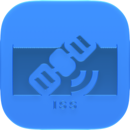
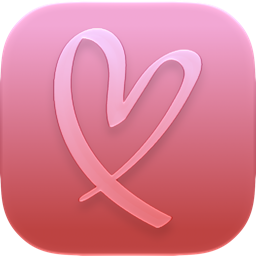

— About
Building small, focused apps for all Apple platforms.
Independent developer. Swift and SwiftUI. The apps here are things I wanted to exist and decided to build myself. Small team of one, which means slow and deliberate — but every decision has a reason.
Apps
| Status | Name | Description | Platforms |
|---|---|---|---|
| Live |  ISSeeYou |
Real-time ISS tracker. See where the station is right now. | macOS, iOS, iPadOS, tvOS |
| TestFlight |  Rak Rak |
Relationship date tracker. Keep track of moments that matter. | iOS, iPadOS |
| TestFlight | Oh Shift! | Roster-calendar wrapper for general purpose shift planning. | macOS, iOS, iPadOS |
| TestFlight | Almanora | Historical events, births and deaths for any calendar date. | macOS, iOS, iPadOS |
Principles
- Small tools outlast ambitious ones.
- No cloud. No account. No excuse.
- Platform conventions exist for a reason. Follow them.
- Boring is reliable.